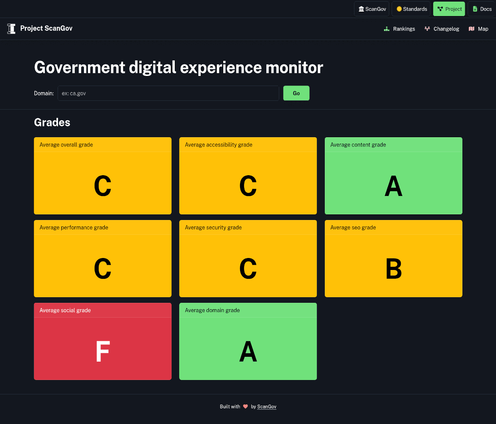
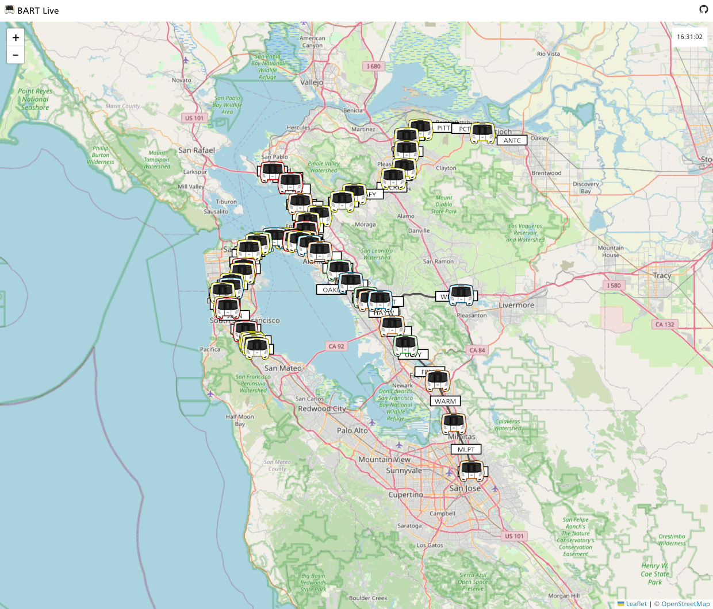
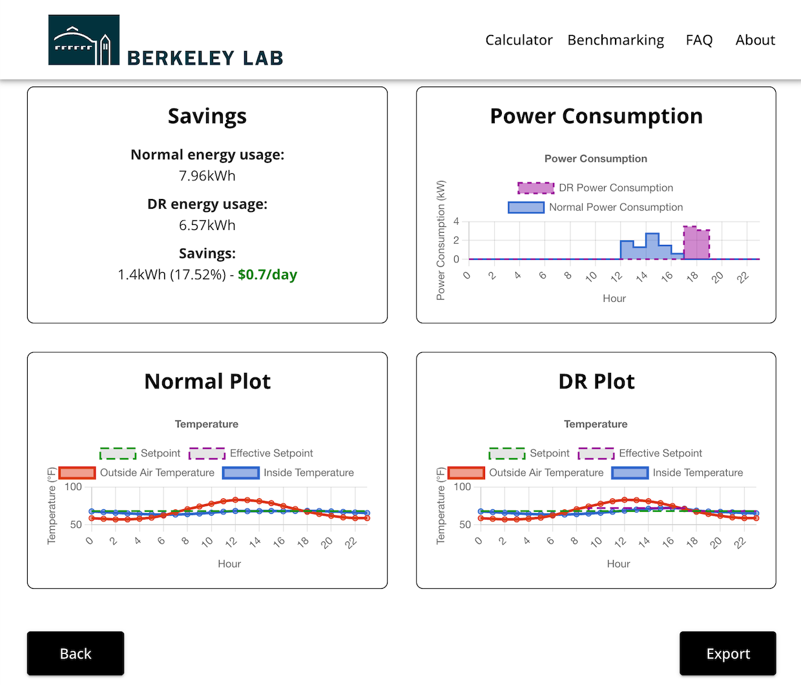
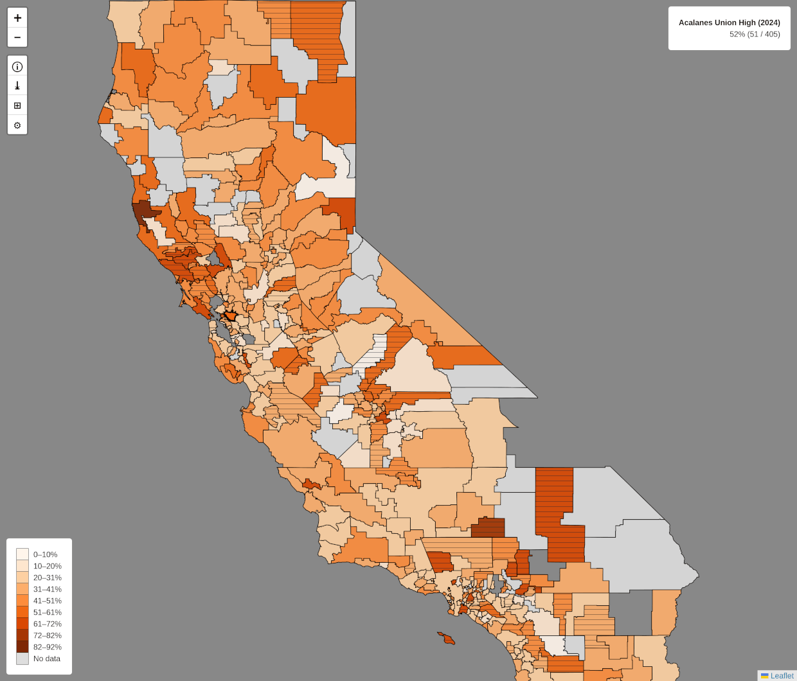
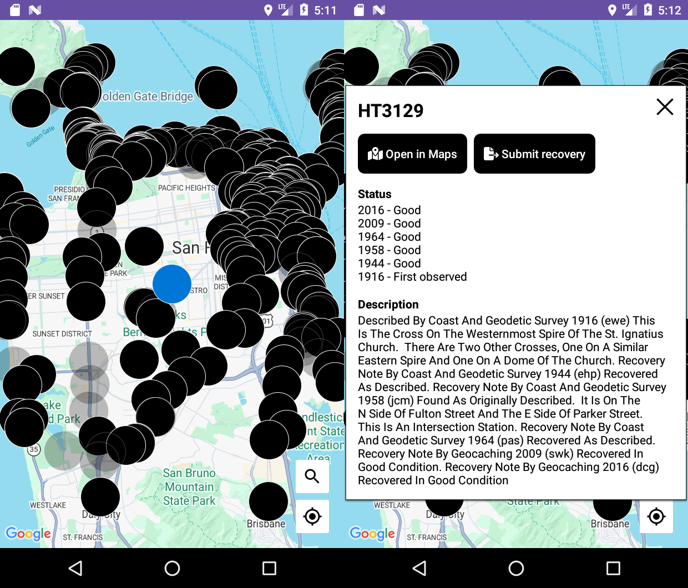
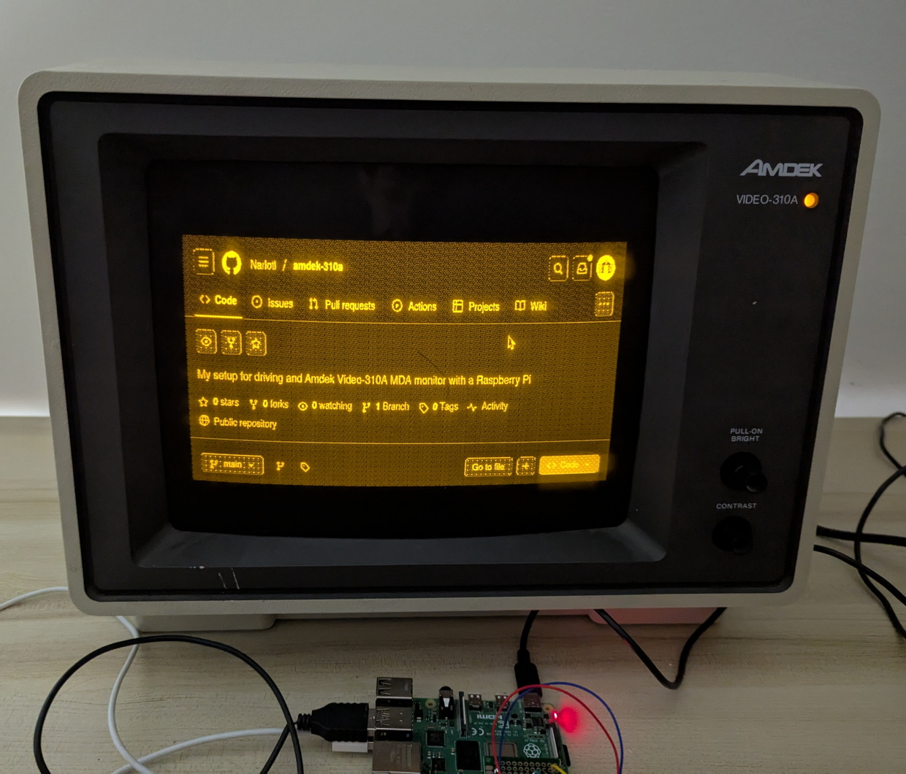

Elias Fretwell

ScanGov
U.S. Government website monitor.
ScanGov is a website I co-created to assess government websites digital standards compliance, including accessibility, performance, security, and .gov conformance. I wrote the web scraper that checks the domains for each standard and worked on the design and functionality of the website. The U.S. Chief Information Officer thanked us for our work on this project.

BART Live
Live view of Bay Area Rapid Transit (BART) activity.
I designed and developed a real-time map of Bay Area Rapid Transit (BART) trains and station departures. I created the server and client using BART’s open data. I designed the train icons and learned how to use geographic information systems (GIS) to transform the data for the line shapes.

Demand Flexibility Assessment Tool
Demand response energy savings calculator.
As part of one of Berkeley Lab’s Experiences in Research intern teams, I built a calculator tool for residential energy savings. I worked on getting appliance data from EnergyStar and storing it in a database. I created the graphs page showing users what they can save by implementing automatic energy usage reduction during peak demand times.

California Alcohol or Drug Use Map
Map of alcohol or drug (AOD) use in California schools.
I created a program to download all of the California Healthy Kids Survey files, extract the relevant numbers from the PDF reports, and save them to a structured dataset. I then made a web map to display it.

GeoMarks
Urban exploring and citizen science.
I wrote a script to download survey marker data from the National Geodetic Survey and created my own database with it. I used this to build an Android app, letting me find survey markers wherever I travel (San Francisco Bay Area, Hawaii, D.C.). The app has allowed me to find and report hundreds of survey markers to NGS.

Amdek 310A
Fun with retro hardware.
I got a 1985 Amdek monochrome monitor at a local thrift warehouse labelled it as “needs repairs”. I didn’t have a computer from the same era to drive it, so I got creative. I figured out how to use a Raspberry Pi to send the image data with the right timings to get a display. I then wrote a dithering shader to improve the amount of shades visible since the monitor only has 3 brightness levels.